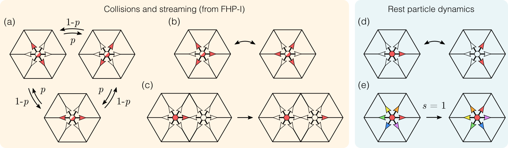
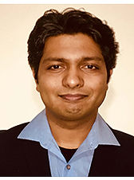
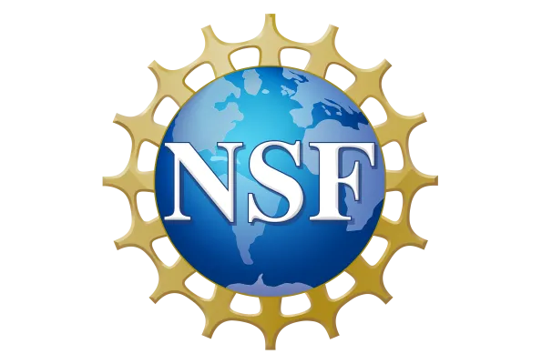

Theoretical physics · New York
Sriram Ganeshan
Associate Professor of Physics
City College of New York & CUNY Graduate Center
Featured research
01 / Research
Collective behavior,
across scales.
How do many interacting particles give rise to something new? We connect quantum matter, fluid dynamics, and information to understand the organizing principles behind complex physical systems.
Quantum fluids & hydrodynamics
Hydrodynamic approaches to strongly correlated quantum matter, nonlinear edge dynamics, and fluids with broken parity. Connections between fractional quantum Hall systems and geophysical waves reveal a shared mathematical language.
Explore related publications ↗Quantum chaos, measurement & control
We investigate how measurement and feedback reshape quantum dynamics: when control overcomes chaos, how information is retained or lost, and which features are universal across different systems.
Recent work in Physical Review Letters ↗Topology, localization & thermalization
Topological phases, mobility edges, and the fate of quantum information in disordered and quasiperiodic systems. We study where familiar expectations of transport and equilibration break down.
Explore the full publication list ↗Recent research
Order, from quantum chaos.
Nature Physics · 2026
Real-time feedback on quantum hardware
With collaborators at Rutgers, IBM, and other institutions, we demonstrated adaptive feedback control on quantum hardware, including systems of up to 100 qubits—a step toward the control needed for future fault-tolerant computers.
Read the paper ↗Physical Review Letters · 2026
What makes quantum control universal?
A study with Andrew A. Allocca, Devesh K. Verma, and Justin H. Wilson investigates universal features of stochastic measurement-and-feedback control in quantum chaotic dynamics.
Read the paper ↗02 / Publications
Ideas in print.
15 selected works · 52 works in the complete list
-
Order from chaos with adaptive circuits on quantum hardware ↗
Nature Physics, (2026)
-
Nonreciprocal Chiral Automata ↗
Preprint · arXiv:2609.35984 · 2026
-
Hall viscosity of the Laughlin state on noisy quantum computers ↗
Physical Review B, 114, 185121, (2026)
-
Korteweg–de Vries dynamics at the edge of a composite boson liquid ↗
Physical Review B, 114, 084505, (2026)
-
Lindbladian quantization of mechanical systems with nonholonomic constraints ↗
Preprint · arXiv:2607.26146 · 2026
-
Hydrodynamic edge modes and fragile surface states of symmetry-protected integer quantum Hall effect of bosons ↗
Physical Review B, 114, 055106, (2026)
-
Odd fluids from chiral cellular automata ↗
Preprint · arXiv:2606.19431 · 2026
-
Universality of Stochastic Control of Quantum Chaos with Measurement and Feedback ↗
Physical Review Letters, 136, 210401, (2026)
-
Measurement and feedback-driven adaptive dynamics in the classical and quantum kicked top ↗
Preprint · arXiv:2604.19874 · 2026
-
Quantum geometry of the rotating shallow water model ↗
Preprint · arXiv:2601.10695 · 2026
-
Kardar-Parisi-Zhang Universality at the Edge of Laughlin States ↗
Physical Review B, 111, L041108, (2025)
-
Local and nonlocal stochastic control of quantum chaos: Measurement- and control-induced criticality ↗
Physical Review B, 110, 054308, (2024)
-
Modulation instability in dispersive parity-broken systems ↗
Preprint · arXiv:2406.04570 · 2024
-
Topological fluids with boundaries and FQH edge dynamics: A fluid dynamics derivation of the chiral boson action ↗
Physical Review B, 109, 174525, (2024)
-
Seeking a many-body mobility edge with matrix product states in a quasiperiodic model ↗
Physical Review B, 108, 094201, (2023)
-
Measurement and Feedback Driven Entanglement Transition in the Probabilistic Control of Chaos ↗
Physical Review Letters, 131, 060403, (2023)
-
Hamiltonian structure of 2D fluid dynamics with broken parity ↗
SciPost Physics, 14, 103, (2023)
-
Coastal Kelvin Mode and the Fractional Quantum Hall Edge ↗
Preprint · arXiv:2303.05669 · 2023
-
Three-Dimensional Odd Viscosity in Ferrofluids with Vorticity-Magnetization Coupling ↗
Preprint · arXiv:2301.07096 · 2023
-
Hele-Shaw flow for parity odd three-dimensional fluids ↗
Physical Review Fluids, 7, 114201, (2022)
Editor's Suggestion -
Ungappable edge theories with finite dimensional Hilbert spaces ↗
Physical Review B, 105, 155137, (2022)
Editor's Suggestion -
Non-linear shallow water dynamics with odd viscosity ↗
Physical Review Fluids, 6, L092401, (2021)
-
Interactions and Mobility Edges: Observing the Generalized Aubry-André Model ↗
Physical Review Letters, 126, 040603, (2021)
Editor's Suggestion -
Floquet dynamics of a disordered band with a single delocalized state ↗
Physical Review B, 102, 134212, (2020)
-
Lyapunov exponents and entanglement entropy transition on the noncommutative hyperbolic plane ↗
SciPost Physics Core, 3, 003, (2020)
-
Hydrodynamics of two-dimensional compressible fluid with broken parity: variational principle and free surface dynamics in the absence of dissipation ↗
Physical Review Fluids, 5, 104802, (2020)
-
Universal Level Statistics of the Out-of-Time-Ordered Operator ↗
Physical Review B, 100, 035112, (2019)
Editor's Suggestion -
Piecewise-terminated spherical topological insulator as a virtual breadboard for Majorana circuitry ↗
Physical Review B, 98, 155401, (2018)
-
Odd surface waves in two-dimensional incompressible fluids ↗
SciPost Physics, 5, 010, (2018)
-
Eigenstate phases with finite on-site non-Abelian symmetry ↗
Physical Review B, 96, 165136, (2017)
-
Localization and transport in a strongly driven Anderson insulator ↗
Physical Review B, 96, 014201, (2017)
-
Odd viscosity in two-dimensional incompressible fluids ↗
Physical Review Fluids, 2, 094101, (2017)
-
Many-body localization in incommensurate models with a mobility edge ↗
Annalen der Physik, 529, 1600399, (2017)
-
Lyapunov Exponent and Four-Point Correlator’s Growth Rate in a Chaotic System ↗
Physical Review Letters, 118, 086801, (2017)
-
Exactly soluble model of boundary degeneracy ↗
Physical Review B, 95, 045309, (2017)
-
Quantum non-ergodicity and fermion localization in a system with a single-particle mobility edge ↗
Physical Review B, 93, 184204, (2016)
Editor's Suggestion -
Formalism for the solution of quadratic Hamiltonians with large cosine terms ↗
Physical Review B, 93, 075118, (2016)
-
Dynamical many-body localization in an integrable model ↗
Physical Review B, 94, 085120, (2016)
-
Measurement of topological invariants in a 2D photonic system ↗
Nature Photonics, 10, 180–183, (2016)
Featured on the cover -
Parafermionic zero modes in ultracold bosonic systems ↗
Physical Review Letters, 115, 065301, (2015)
-
Many body localization and quantum non-ergodicity in a model with a single-particle mobility edge ↗
Physical Review Letters, 115, 186601, (2015)
-
Nearest neighbor tight binding models with an exact mobility edge in one dimension ↗
Physical Review Letters, 114, 146601, (2015)
-
Constructing a Weyl semimetal by stacking one dimensional topological phases ↗
Physical Review B, 91, 125438, (2015)
-
Critical integer quantum hall topology and a topological quantum phase transition in the Maryland Model ↗
Physical Review B, 90, 041405(R), (2014)
-
Exact Classification of Landau-Majorana-Stückelberg-Zener Resonances by Floquet Determinants ↗
Physical Review Letters, 111, 130405, (2013)
-
Topological Zero-Energy Modes in Gapless Commensurate Aubry-André-Harper Models ↗
Physical Review Letters, 110, 180403, (2013)
-
Simulation of quantum zero-point effects in water using a frequency-dependent thermostat ↗
Physical Review B, 87, 134207, (2013)
-
FQHE interferometers in strong tunneling regime. The role of compactness of edge fields ↗
Physical Review B, 86, 235309, (2012)
-
Fluctuation Relations for Current Components in mesoscopic Electric Circuits ↗
Physical Review B, 84, 245405, (2011)
-
Quasiparticle scattering from vortices in d-wave superconductors. II. Berry phase contribution ↗
Physical Review B, 84, 064503, (2011)
-
Quasiparticle scattering from vortices in d-wave superconductors. I. Superflow contribution ↗
Physical Review B, 84, 064502, (2011)
-
The role of hydrogen bonding in water–metal interactions ↗
Physical Chemistry Chemical Physics, 13, 3375–3384, (2011)
No publications match this search. Try another term, year, or category.
Publication records updated November 2026ORCID 0009-0000-1488-5370 ↗
03 / About

I am an Associate Professor of Physics at the City College of New York and a faculty member in the Physics doctoral program at the CUNY Graduate Center. My group studies topological phases of matter, quantum chaos and control, localization and thermalization, and the hydrodynamics of quantum and active fluids.
Our research connects fractional quantum Hall systems with geophysical waves, explores fluids with broken parity, and investigates how measurement and feedback can control quantum dynamics.
I joined CCNY in 2018 after appointments at the Simons Center for Geometry and Physics at Stony Brook University and at the Joint Quantum Institute and Condensed Matter Theory Center at the University of Maryland. I received my Ph.D. in Physics from Stony Brook in 2012.
View full academic CV ↗2025–present
Associate ProfessorCity College of New York, CUNY
2018–2024
Assistant ProfessorCity College of New York, CUNY
2015–December 2017
Research Assistant ProfessorSimons Center for Geometry and Physics, Stony Brook University
2012–2015
Postdoctoral Researcher (JQI-PFC Fellow)Joint Quantum Institute and Condensed Matter Theory Center, University of Maryland, College Park
Honors & recognition
- 2026–2027KITP Fellow ↗Kavli Institute for Theoretical Physics, UCSB
- 2024Feliks Gross Award for Outstanding Research ↗City University of New York
- 2020NSF CAREER Award ↗National Science Foundation
- 2012Max Dresden Prize for Best Theoretical Physics ThesisStony Brook University
- Visiting Summer Research FellowTata Institute of Fundamental Research, Mumbai, India
Education
- 2012Ph.D. in PhysicsStony Brook University
- 2009M.A. in PhysicsStony Brook University
- 2006M.Sc. in PhysicsJawaharlal Nehru University
- 2004B.Sc. (Hons) in PhysicsSri Venkateswara College, University of Delhi
Research support
Support for discovery.

U.S. National Science Foundation
Research awards and collaborative projects supporting work in quantum matter, hydrodynamics, and quantum control.
2025–2026
PSC-CUNY Enhanced Award
One-year research award
$12,000
2024–2027
NSF Collaborative Grant
Fractional quantum Hall state on a noisy quantum computer
$368,000
2020–2026
NSF CAREER Award
Quantum Hydrodynamics: From Electron Fluids to Chiral Active Matter
$514,001
September 2019–August 2023
QII TAQS
Chip-scale quantum emulators based on polaritonic lattices
$1,948,232
Total collaborative project
2019–2020
PSC-CUNY Enhanced Award
One-year research award
$12,000
The QII TAQS figure is total collaborative project funding. Other amounts and award periods are listed as recorded in the CV.
04 / Teaching & mentoring
Physics is a conversation.
Developing ideas from first principles, working through difficult problems, and supporting researchers at different stages.
I teach undergraduate and graduate physics. Recent courses include analytical dynamics, mathematical methods for physicists, solid-state physics, and fluid dynamics in classical and quantum systems.
Doctoral alumni
Dylan ReynoldsPh.D. completed Summer 2024 · Postdoctoral researcher at ICTS, Bengaluru
Sudheesh SrivastavaPh.D. completed Summer 2025 · Industry
Postdoctoral researchers mentored
Andrew AlloccaPostdoctoral research supervision
Daniel SchubringPostdoctoral research supervision
Gustavo MonteiroFormer postdoctoral researcher · College of Staten Island, CUNY
Interested in the research? Email me with a brief introduction and the topics you would like to discuss.
Physics Department · Room MR-313
City College of New York
160 Convent Avenue, New York, NY 10031
Office: 212-650-6085
ORCID ↗ · Full academic CV ↗
City College of New York
160 Convent Avenue, New York, NY 10031
Office: 212-650-6085
ORCID ↗ · Full academic CV ↗